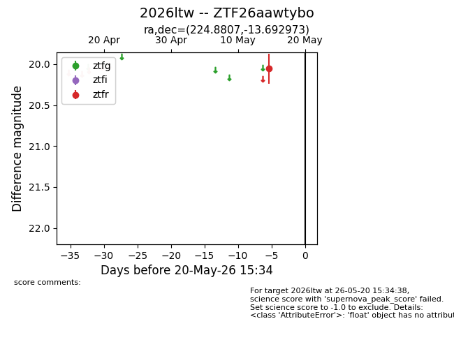
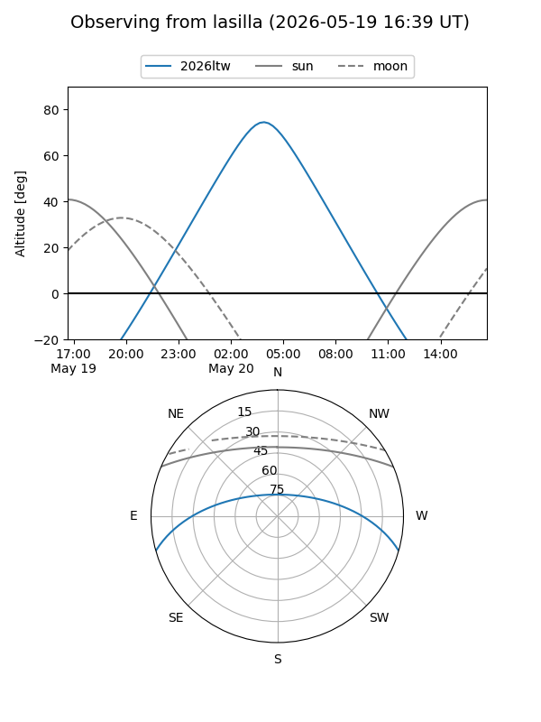
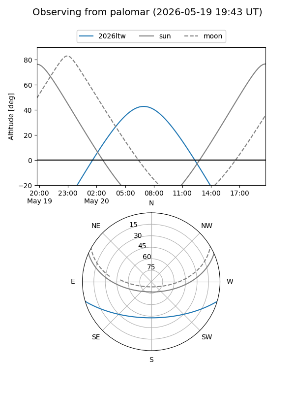

2026ltw
Target 2026ltw at 2026-05-20 15:42
Aliases and brokers:
FINK: link
Lasair: link
ALeRCE: link
TNS: link
YSE: link
alt names
ZTF26aawtybo (ztf,fink_ztf)
2026ltw (tns,yse)
Coordinates:
equatorial (ra, dec) = 224.8807,-13.69297
equatorial (HMS+DMS) = 14:59:31.37,-13:41:34.70
galactic (l, b) = (344.2369,+38.69625)
Flags:
Photometry:
last ztfr=20.06
1 ztfr detections
Lightcurve

Visibility


Additional plots